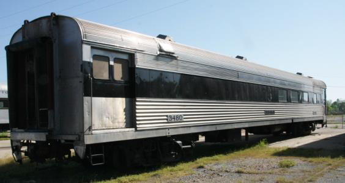
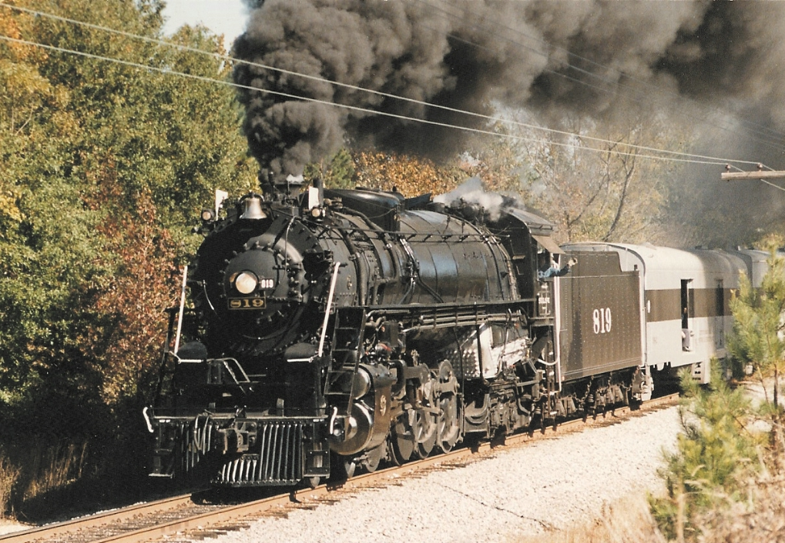

Built in December 1942 at the Cotton Belt Shops in Pine Bluff, Arkansas
This was the last steam locomotive built in Arkansas. It served the St. Louis Southwestern Railway (Cotton Belt Route) until retirement in 1955. It was restored to operating condition in 1993 by the Arkansas Railroad Museum in Pine Bluff, Arkansas

Cotton Belt Steam Locomotive #819
Quisque justo erat, placerat fermentum vel, iaculis vel ligula. Phasellus et elit purus. Curabitur ipsum enim, scelerisque vitae condimentum ac, cursus eget quam. Nullam volutpat dui ut risus pulvinar at fringilla sem tristique. Nulla facilisi.
Donec posuere euismod purus, eu scelerisque risus pellentesque eu. Vestibulum sed tincidunt metus.

Quisque justo erat, placerat fermentum vel, iaculis vel ligula. Phasellus et elit purus. Curabitur ipsum enim, scelerisque vitae condimentum ac, cursus eget quam. Nullam volutpat dui ut risus pulvinar at fringilla sem tristique. Nulla facilisi.
Donec posuere euismod purus, eu scelerisque risus pellentesque eu. Vestibulum sed tincidunt metus.